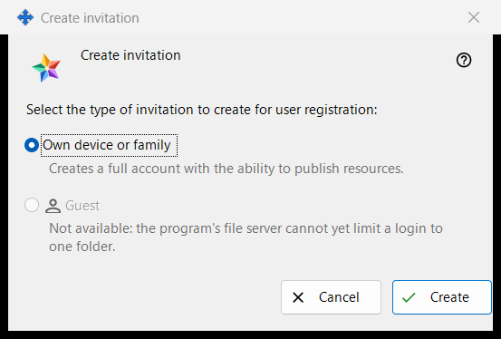
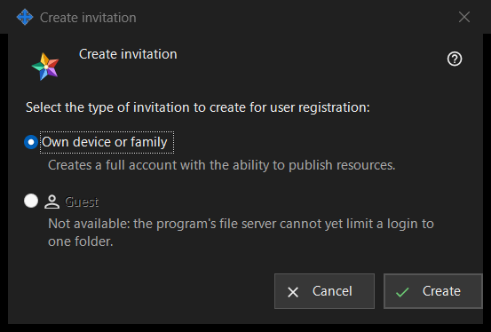

Create invitation
What this is for
This small window asks what kind of account the new invitation will create. Open it with «Create invitation..» in the Invitations group of Exchange server settings; the group is shown once the manager reaches the server.


In this order
- In Exchange server settings find the Invitations group and press «Create invitation..».
- Keep «Own device or family» selected.
- Press «Create».
- The window «Invitation created» opens and shows the code once: copy it there. Press «Cancel» or Escape to leave without creating anything.
The elements
Type of invitation
The question «Select the type of invitation to create for user registration:» offers two radio buttons. «Own device or family» is selected by default, and the line under it says «Creates a full account with the ability to publish resources.» The person who uses the invitation registers a login and a password of their own.
Create
«Create» asks the server for a single-use invitation. On success the line «Invitation successfully created.» appears on the settings page and the window with the code opens. If the server refuses, the reason appears on the page and no code window opens. The list shows each invitation by type, creation time, state and a hash, never by its code.
Withdraw an invitation
To cancel an invitation that was already created, select it in the list and press «Withdraw invitation». After you confirm, its code stops working.
Cancel
«Cancel» or Escape closes the window and creates nothing.
Manager settings · SFTP sharing settings · Exchange server settings